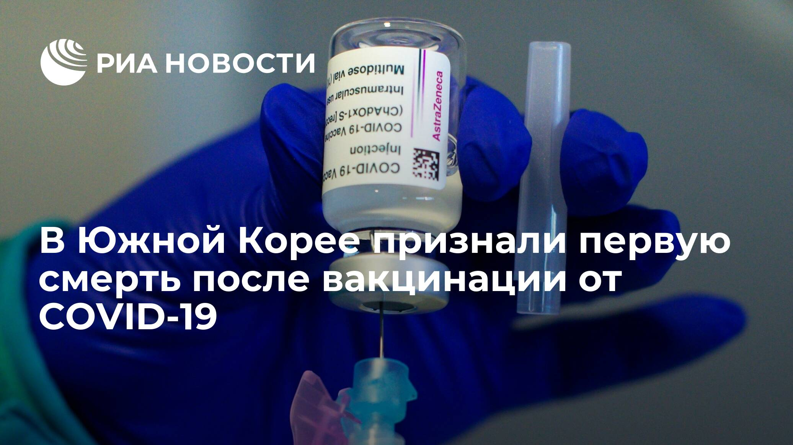
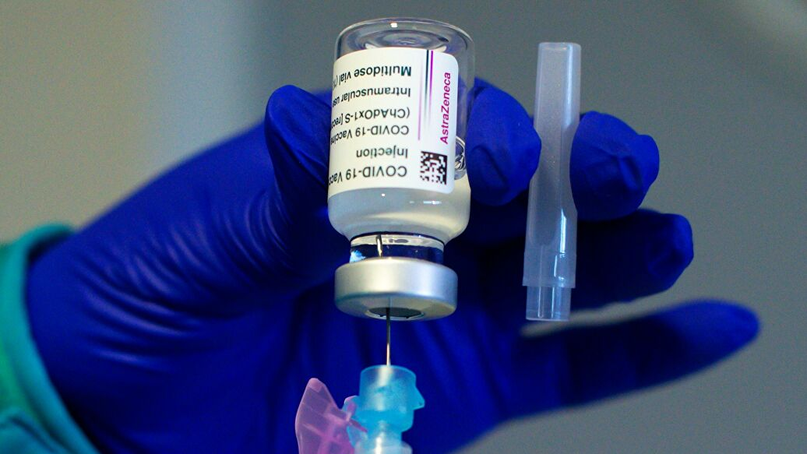
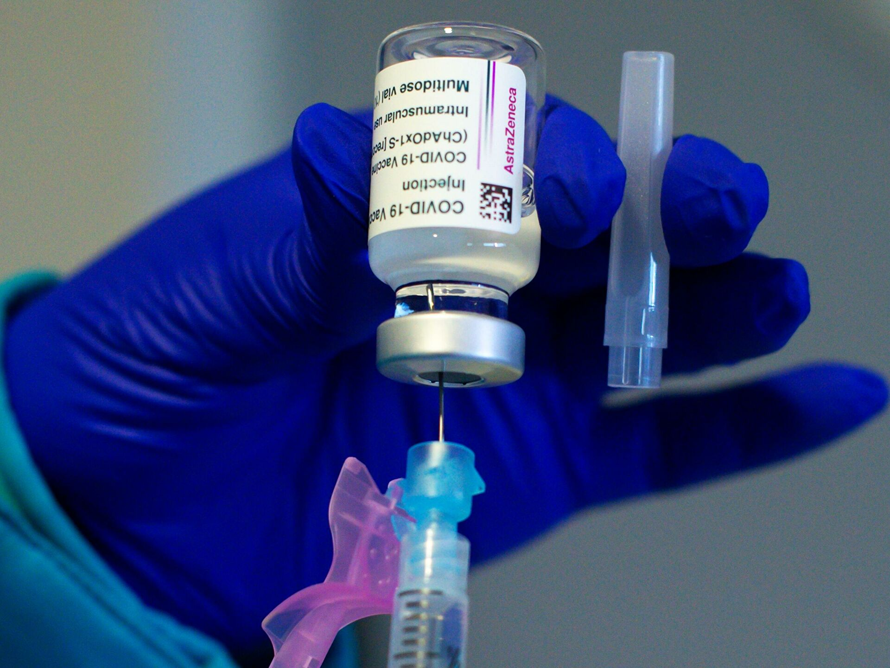
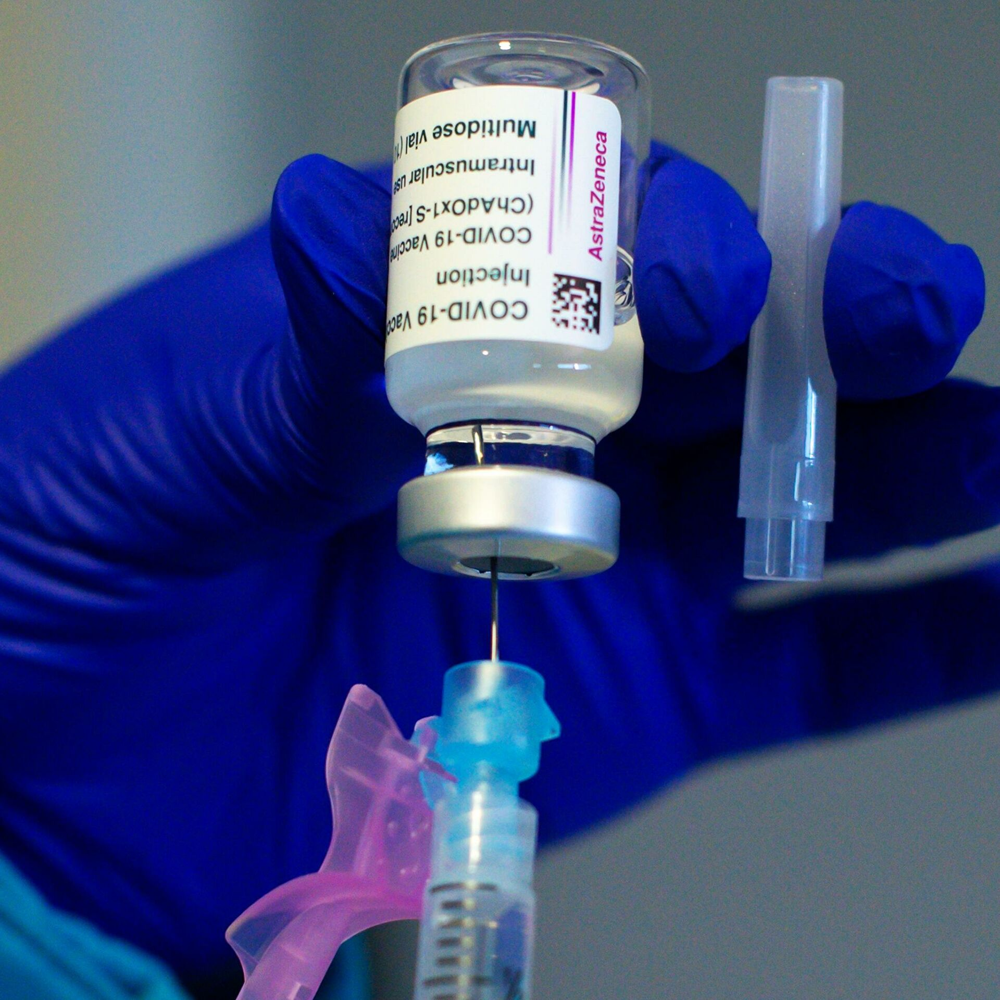

В Южной Корее признали первую смерть после вакцинации от COVID-19

СЕУЛ, 22 июн - РИА Новости.Органы здравоохранения Южной Кореи признали первую смерть в стране в результате вакцинации от COVID-19, мужчина умер от тромбоцитопении после прививки препаратом AstraZeneca, сообщили в группе по реагированию и продвижению вакцинации в Республике Корея.
Как сообщил на брифинге глава команды по расследованию случаев побочных реакций группы по реагированию и продвижению вакцинации Пак Ён Чжун, мужчина в возрасте 30 лет скончался в среду, у него был подтвержден тромбоз с синдромом тромбоцитопении (TTS).Прививку он сделал 27 мая, через девять дней после вакцинации у пациента началась сильная головная боль и тошнота, позже он был госпитализирован.

Это первый случай, когда Южная Корея официально признала, что смерть связана с вакцинацией.На сегодняшний день органы здравоохранения страны зарегистрировали 224 случая смерти, которые могли быть связаны с прививками от COVID-19.Считается, что 210 из них не связаны с вакцинацией, а 13 требуют дополнительного расследования.
С середины апреля Южная Корея предлагает вакцину AstraZeneca только гражданам старше 30 лет на фоне опасений по поводу возникновения побочных эффектов, но недавно власти заявили, что начнут ставить ее и людям младше 30 лет.
Южная Корея завершила вакцинацию уже примерно 7,9% населения страны, при этом 29,2% получили хотя бы первый укол.В стране применяются вакцины AstraZeneca, Pfizer и Janssen.


Posted On: 2021-06-21T22:24:00
Content Date: 2021-06-21
Download Date: 2021-09-16
Document ID: L0C04G78O